USER TENSION
为什么开始学习前，需要先了解孩子的信息？
收集孩子的年龄与英语基础，是为了匹配适合孩子的学习内容，并推荐对应的课程级别。
ANCHOR CASE · SENIOR UX / OVERSEAS EDTECH
Jiligaga 服务 2–8 岁海外儿童。我把 Onboarding 从注册步骤重构为第一节课的准备过程，并从 V1.5 起用全链路漏斗追踪注册、进课、完课与 D3 / D7 回访，让每次迭代都回答同一个问题：孩子为什么愿意继续学？
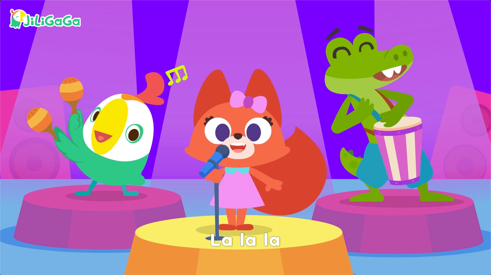
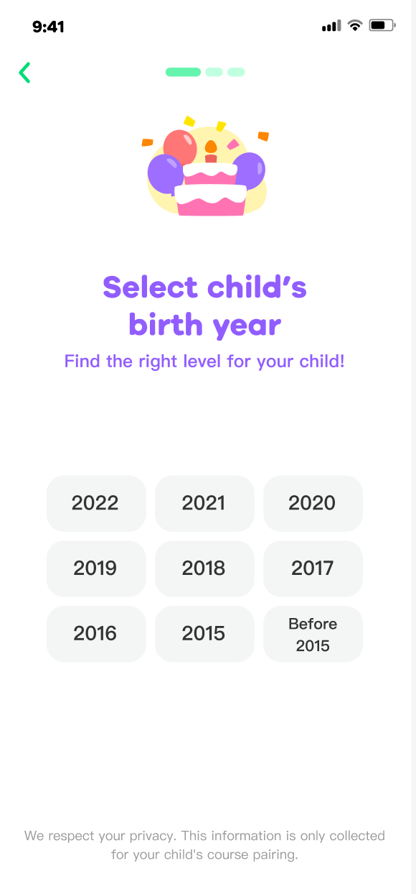
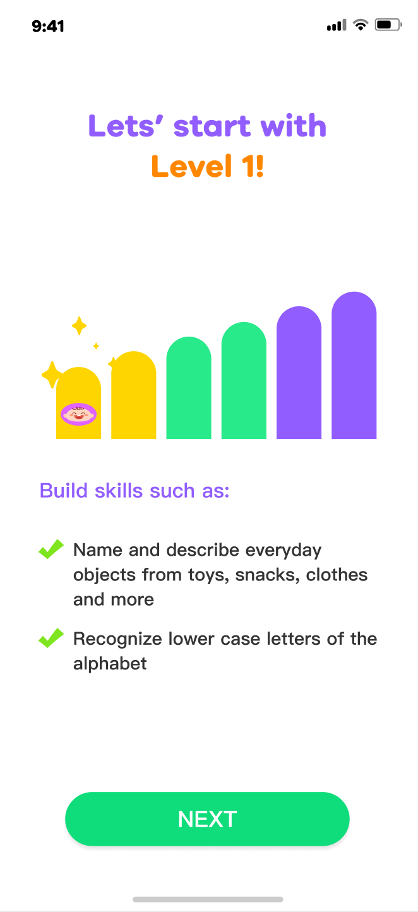
01 / CONTEXT & TENSION
家长需要理解信息为何被收集，孩子需要尽快感知课程价值；仍处在拓展早期的业务，则需要先让更多家庭顺利进课。
USER TENSION
收集孩子的年龄与英语基础，是为了匹配适合孩子的学习内容，并推荐对应的课程级别。
BUSINESS TENSION
Jiligaga 仍处于市场拓展早期。相比先收费，更重要的是让家庭先进入课程、理解产品价值。
DESIGN TENSION
真正的问题不是删掉几页，而是让入口、信息用途、级别推荐与首课价值形成连续承接。
02 / RESEARCH → DECISION
证据来自 4 组台湾家庭访谈、Onboarding 竞品调研，以及 V1.6–V1.10 版本漏斗。它们共同指向：先解释价值与信息用途，再让用户进入首课。
家庭访谈样本为 4 组；版本数据为横向对比，包含同期变量，仅用于定位问题和指导迭代，不作为严格因果证明。
4 组台湾家庭体验中，孩子对游戏互动的反应比影片更积极；家长更认可描写、口语等强教学环节。
因此：把课程价值放进可操作、可反馈的学习环节。无基础家庭认为内容量合适，有基础家庭则觉得偏简单；同一套内容会产生相反判断。
因此：结合年龄与英语基础推荐级别，并解释推荐理由与学习结果。竞品 Onboarding 平均 4 步、约 1 分 45 秒；但 Jiligaga 仍处于拓展用户的初级阶段，业务模式并不相同。
因此：不照搬先付费链路，优先缩短进课路径并提前传递课程价值。版本复盘中，年龄页仍存在流失；页面缺少进度与信息用途说明。该页面级观察与下方版本汇总人数比分开解读。
因此：在索取年龄前解释用途，并建立清晰的流程预期。ONBOARDING ANALYSIS · V1.6 → V1.10
“已有账号”入口点击率从 4% 升至 15%，结合注册首段约 10% 的流失，我们将它视为路径分流信号，而非增长结果。V1.10 因此围绕「明确新用户主路径—解释信息用途—直接按年龄推荐级别」重构 Onboarding。
已有账号入口点击率
V1.6 → V1.8 · 行为信号，不等于增长Android Onboarding
V1.10 仅 Android 投放 · 至少 +15pp · 已达阶段低标iOS 基线 / 目标区间
目标待验证 · 不作为上线结果证据边界4% → 15% 仅表示账户入口点击变化；iOS 87%–90% 与 Android 79%–85% 是目标区间。当前只确认 Android V1.10 已达到 79% 阶段低标；60% 来自内部竞品调研，仅作方向信号。
BEFORE · 预期被打断
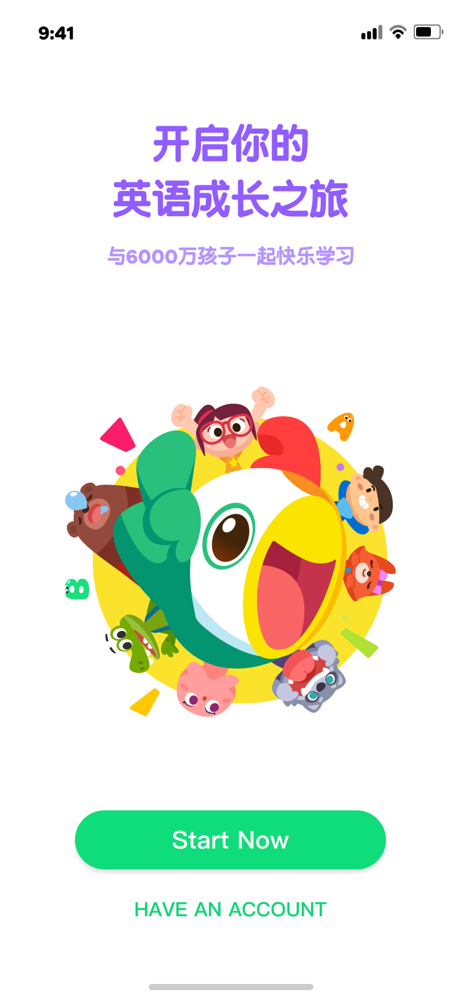
账户入口与新用户主按钮同屏竞争。
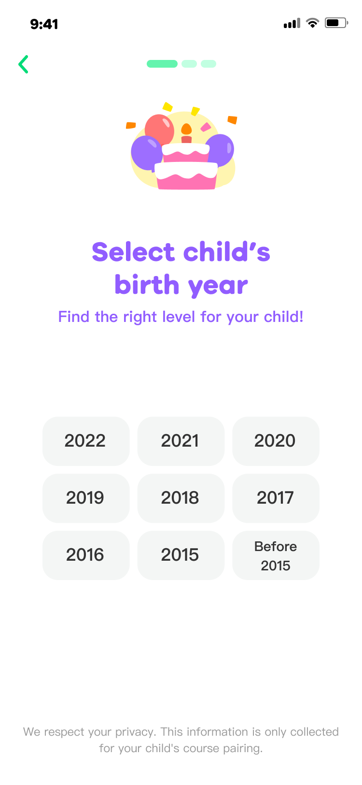
点击开始后立即索取信息，并增加年份换算成本。
AFTER · 推荐路径
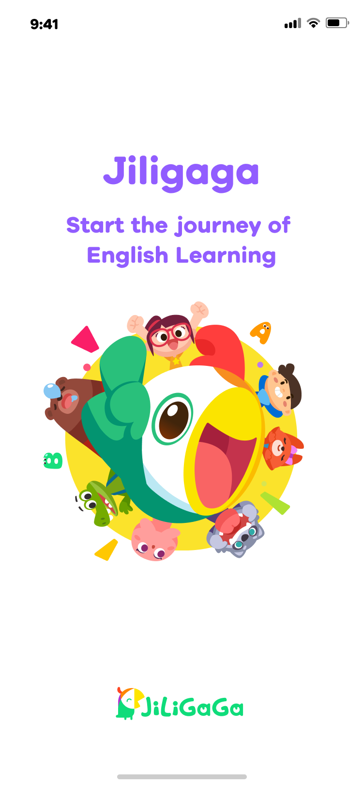
聚焦品牌与英语学习旅程，不再承载双入口竞争。
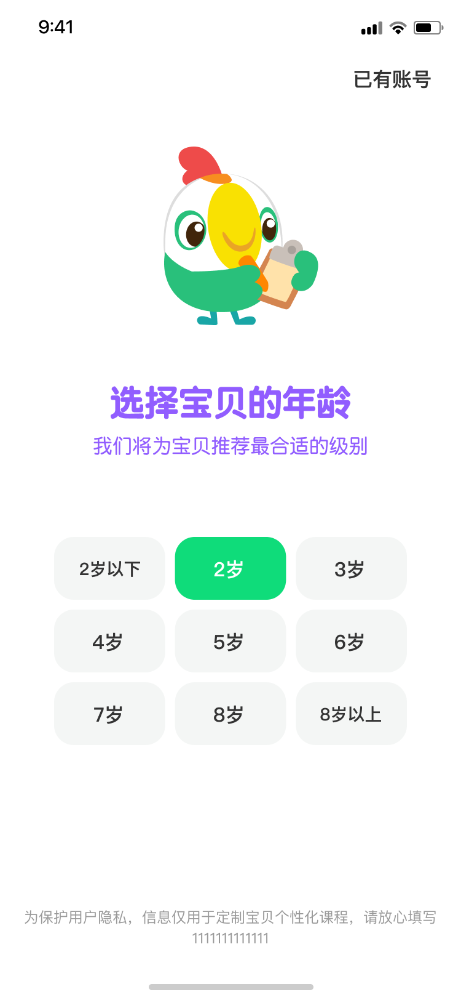
直接选择年龄，并解释信息用于匹配合适级别。
保留已有账号，但不再与新用户主路径并列。
内部竞品调研约 60% 直接选年龄；以方向信号替代跨历法换算。
先说明信息用途，再进入对应课程级别。
03 / VERSION DATA · V1.5 / V1.10
按现有版本汇总人数复算，访问到首课的转化下降，D3、D7 回访完课与首课完课的人数比上升。流量规模增长不等于转化效率提高，因此把“开始学习”和“持续回访”拆开观察。
| 阶段 | V1.5 | V1.10 |
|---|---|---|
| 访问首页 | 347,892 | 913,857 |
| 注册 / 登录 | 291,402 | 701,398 |
| 进入课程 | 150,634 | 329,486 |
| 完成首课 | 125,498 | 228,744 |
| D3 回访完课 | 9,138 | 46,127 |
| D7 回访完课 | 4,614 | 25,476 |
| 指标 / 分母 | V1.5 | V1.10 | 变化（百分点） |
|---|---|---|---|
| 访问 → 注册分母：访问首页 | 83.76% | 76.75% | -7.01 |
| 注册 → 进课分母：注册 / 登录 | 51.69% | 46.98% | -4.72 |
| 进课 → 首课分母：进入课程 | 83.31% | 69.42% | -13.89 |
| D3 回访完课 / 首课完课分母：完成首课 | 7.28% | 20.17% | +12.88 |
| D7 回访完课 / 首课完课分母：完成首课 | 3.68% | 11.14% | +7.46 |
计算口径：前 3 项为相邻阶段人数比；D3、D7 分别以各版本“完成首课”人数为分母，不互为漏斗步骤。未核实为同一批用户时，回访指标仅作汇总人数比，不等同于严格队列留存率。
比较边界：需核对版本统计期、渠道构成、用户去重与完整观察窗，才可判断净变化及设计贡献；本页不将版本差异单独归因于设计。
04 / EVIDENCE → DESIGN QUESTIONS
访问人数从 347,892 增至 913,857。先核对流量来源和用户构成，再比较路径效率。
访问到注册下降 7.01 个百分点。检查入口承诺、注册阻力与信息收集预期。
注册到进课下降 4.72 个百分点。排查推荐理由、课程入口与下一步操作是否清晰。
进课到首课完成下降 13.89 个百分点。结合行为记录检查难度、加载中断与反馈。
D3 与首课完课人数比上升 12.88 个百分点。需用同队列对照验证提醒与任务的作用。
D7 与首课完课人数比上升 7.46 个百分点。核对观察窗，继续验证长期回访与学习质量。
以上为数据观察与待验证的设计方向，不再分配缺少权重依据的“机会占比”。正向与负向变化同时保留，以后续同口径验证指导迭代。
05 / STRATEGY
阶段 1：注册与理解
阶段 2：学习与持续
Part 1 · 视觉与信息升级
这不是一次换肤，而是同时重构产品定位、信息层级与进入课程的路径。
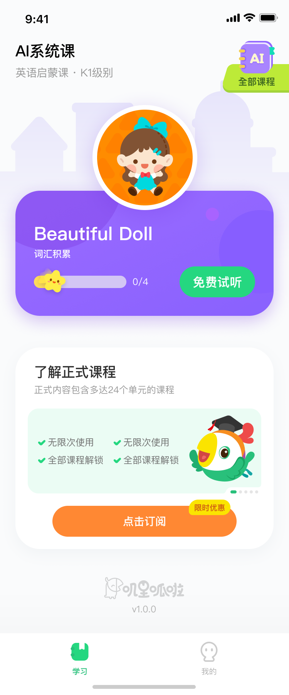
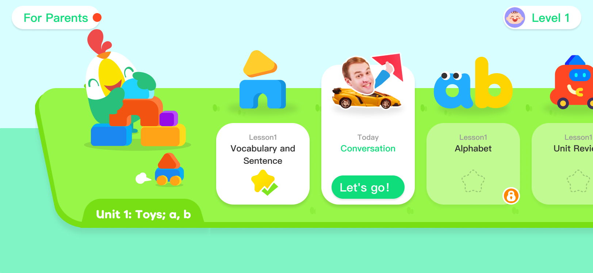
对照 Lingokids、Khan Kids 与本地家庭画像，把产品从“在线课程”转向寓教于乐的数字玩具，并建立横向关卡地图与全屏沉浸式交互规范。
台湾市场视觉调研显示，原有高饱和表达难以建立本地信任；因此转向马卡龙绿色、圆润字体与更亲和的角色语言。
串联站外广告、App 内领取、LINE 私域与订阅路径，并用骨架屏承接加载等待，降低中途跳失风险。
Part 2 · 学习节奏与回访激励
完成首课后生成本周任务，让每日进度、连续挑战与完成奖励共同承接下一次回访。
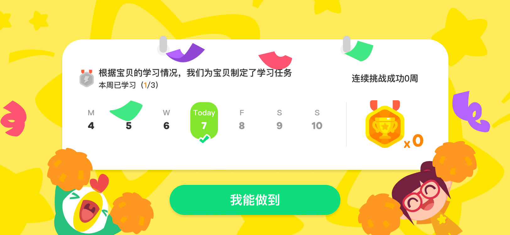
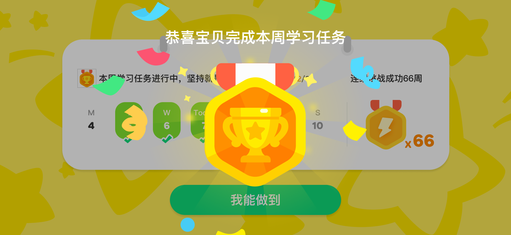
用 7 天日历、Today 状态与本周进度，让孩子和家长理解今天做到哪一步。
打卡后以勋章、彩带和完成态回应努力，把抽象进度转成可感知的奖励。
持续挑战周数与勋章累计保持下一阶段目标可见，为 D3 / D7 回访提供明确触发点。